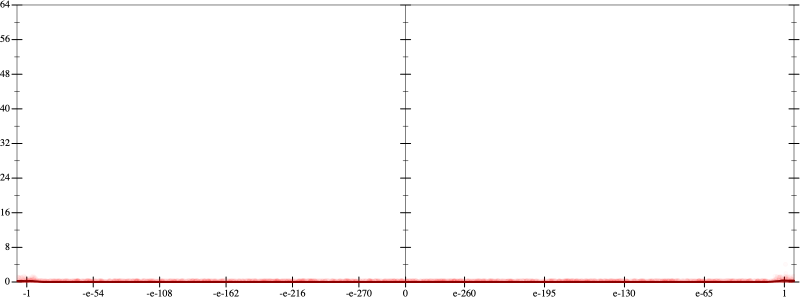
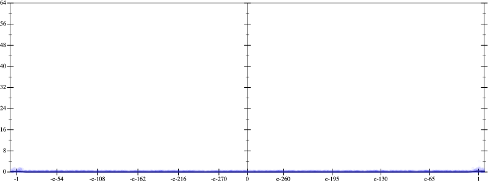
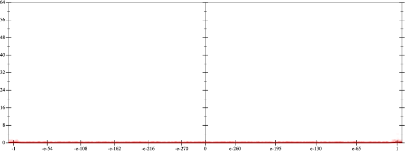
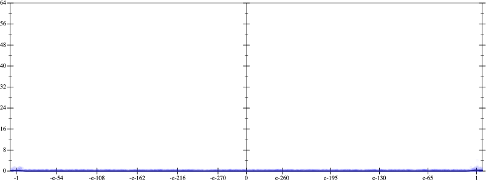
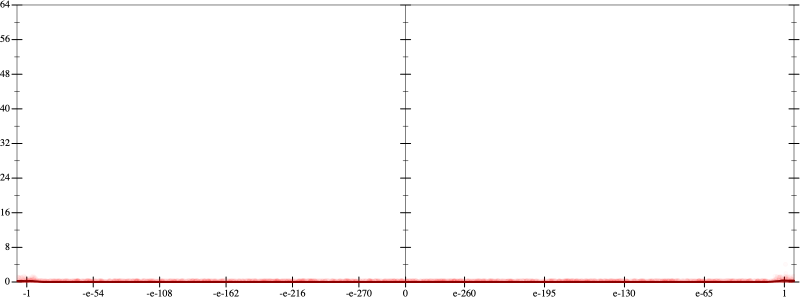
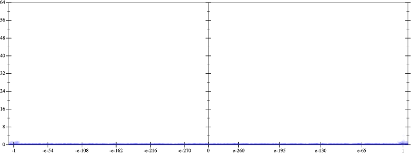

Error
 
Bits error versus x
Bits error versus x
Results
Initial program 0.0
Time bar (total: 1.5m)Debug log
herbie shell --seed 92312148
(FPCore (x)
:name "2"
:pre (and (>= x -100000000.0) (<= x 100000000.0))
(+ (+ 1.0 (* -2.0 x)) (* 0.5 (* x x))))